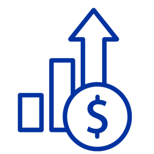

Convertimos la integración regional en oportunidades concretas
La Cámara articula empresas, comercios, inversores e instituciones para ampliar su alcance y facilitar su actuación entre distintos mercados y movilizar comercio, inversión y financiación al servicio del desarrollo de América Latina.
Acercamos capacidades que con frecuencia se encuentran separadas
Conocimiento local y presencia internacional; proyectos y capital; empresas y mercados; cámaras nacionales e interlocutores regionales y globales; oportunidades productivas y socios capaces de convertirlas en resultados.
Forma parteEl MERCOSUR tiene como funciones principales integrar las economías de sus países miembros, facilitar la libre circulación de bienes y servicios, y negociar conjuntamente acuerdos de libre comercio globales para insertar a la región en las cadenas internacionales de valor.
Por su parte, la Cámara de Comercio se encarga de transformar este marco en negocios concretos, expandiendo el alcance internacional de las empresas locales, facilitando la atracción de inversiones y asesorando a actores extranjeros sobre el mercado latinoamericano.
Proyección internacional del tejido empresarial latinoamericano
América Latina reúne empresas, recursos, talento, conocimiento técnico y capacidades productivas con potencial para competir en mercados internacionales. Sin embargo, muchas organizaciones encuentran dificultades para identificar compradores, construir relaciones de confianza o acceder a financiación.
La Cámara amplía esa proyección mediante una plataforma común de relación y cooperación. Trabaja con cámaras, asociaciones empresariales, empresas e instituciones para acercarlas a nuevos mercados, socios, inversores y redes internacionales.
Una puerta de entrada coordinada a la región
Para una empresa, un inversor o una institución internacional, América Latina no constituye un mercado homogéneo. Cada país presenta normas, sistemas tributarios, estructuras administrativas y prácticas institucionales propias.
La Cámara ofrece una puerta de entrada coordinada. Ayuda a identificar mercados, contrapartes, cámaras locales, instituciones y especialistas; facilita relaciones empresariales e institucionales y contribuye a reunir las capacidades que cada iniciativa requiere.
Cámaras que amplían la voz de sus empresas
Las cámaras nacionales, territoriales, binacionales y sectoriales conocen de primera mano a sus empresas, sus mercados y sus prioridades. La Cámara trabaja junto a ellas cuando esas prioridades necesitan una dimensión regional o internacional.
Altavoz y plataforma regional
Facilitamos vínculos con otras cámaras, organismos, mercados e inversores; apoyamos iniciativas que atraviesan fronteras.

Sin sustituir ni jerarquizar
Nuestra relación con las cámaras existentes es de complementariedad. La Cámara actúa donde el objetivo trasciende una sola jurisdicción.
Comercio, inversión y financiación
La integración económica solo produce resultados cuando se traduce en relaciones comerciales, inversión productiva y acceso a capital.
Una plataforma de doble dirección
Llevamos capacidades y oportunidades de América Latina hacia el mundo y acercamos a la región mercados, inversión, financiación, tecnología y cooperación internacional.
Contáctanos